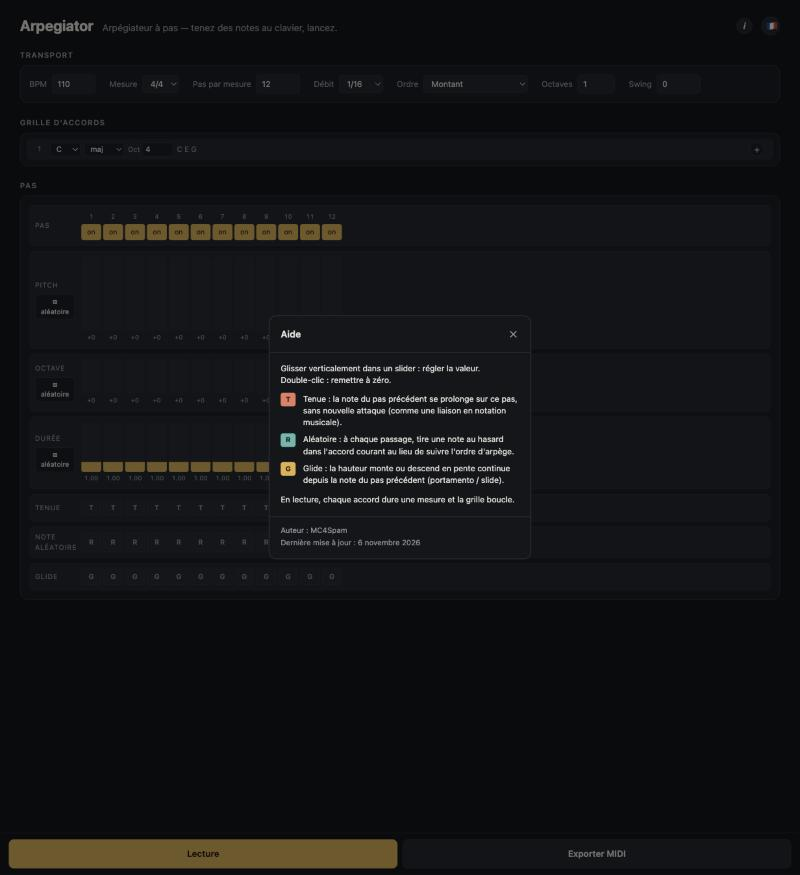

Fenêtre d'aide
Fenêtre modale ouverte depuis le bouton « i » de l'en-tête. Elle rappelle comment manipuler les sliders, détaille le rôle des trois flags T / R / G, puis affiche l'auteur et la date de la dernière publication.

Contenu
| Titre « Aide » + bouton ✕ | Barre d'en-tête de la fenêtre modale ; ✕ ferme la fenêtre (Échap ou clic sur le fond également). |
|---|---|
| Mode d'emploi des sliders | Glisser verticalement dans un slider : régler la valeur. Double-clic : remettre à zéro. |
| Flag T — Tenue | La note du pas précédent se prolonge sur ce pas, sans nouvelle attaque (comme une liaison en notation musicale). |
| Flag R — Aléatoire | À chaque passage, le moteur tire une note au hasard dans l'accord courant au lieu de suivre l'ordre d'arpège. |
| Flag G — Glide | La hauteur monte ou descend en pente continue depuis la note du pas précédent (portamento / slide). |
| Rappel lecture | En lecture, chaque accord dure une mesure et la grille boucle. |
| Pied de page | Auteur : MC4Spam. Dernière mise à jour : date de la dernière publication, localisée dans la langue courante. |